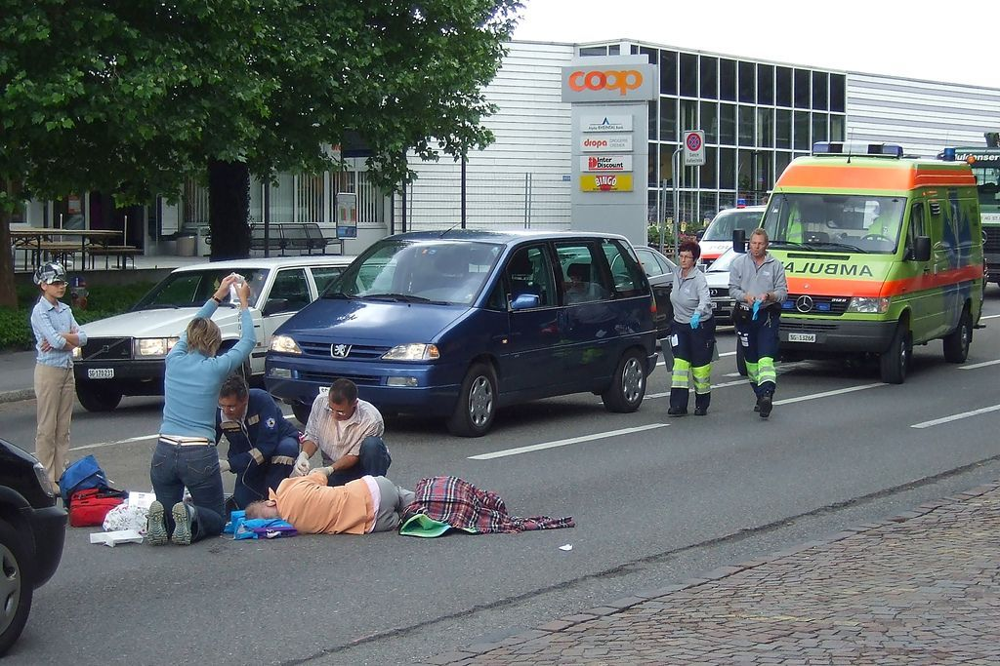
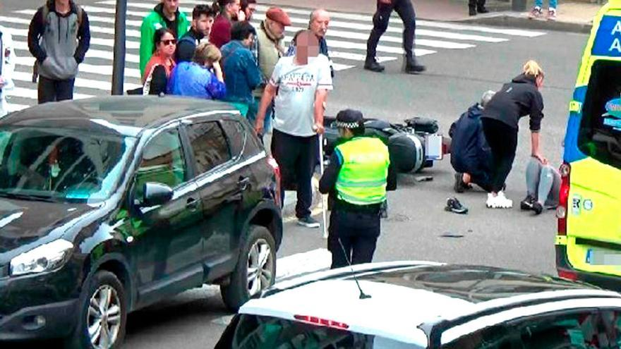

La comunidad Vistahermosa
A la una de la tarde atropellaron a un señor de la tercera edad en la cual el señor se encontraba en una situacion critica, lametablemete fallecio ya que la unudad medica no llego a tiempo, el muchacho que iba manejando la unidad lo tuvueron detenido en la comunidad hasta las ocho de la noche y despues lo trasladaron a teposcolula, el muchacho fue cosiderado inocente ya que en la autopsia salio que el señor iba en estado de ebriedad.
 